# import libraries
import warnings as wrn
wrn.filterwarnings('ignore', category = DeprecationWarning)
wrn.filterwarnings('ignore', category = FutureWarning)
wrn.filterwarnings('ignore', category = UserWarning)
#import optuna
#import xgboost as xgb
import pandas as pd
import matplotlib.pyplot as plt
import numpy as np
import scipy.stats as stats
import seaborn as sns
import matplotlib.pyplot as plt
from sklearn.model_selection import GroupKFold
from sklearn.metrics import accuracy_score, classification_report, mean_absolute_error
from sklearn.ensemble import RandomForestRegressor
from sklearn.svm import LinearSVC
from sklearn.preprocessing import RobustScaler
from sklearn.pipeline import make_pipeline
from sklearn.decomposition import PCA
from sklearn.model_selection import cross_val_score
from sklearn.metrics import make_scorer, accuracy_score, median_absolute_error
#from imblearn.over_sampling import RandomOverSampler
from sklearn.model_selection import train_test_split
from sklearn.preprocessing import LabelEncoder
from sklearn.metrics import mean_squared_error, r2_score
#import lightgbm as lgb
import numpy as np
from scipy import stats1. Introduction
In this exercies, we’ll analyse the bank dataset for exploratory and classification techniques.
2. Dataset Overview
2.1 Loading Libraries
# reading .csv files
train_data = pd.read_csv('train_bank.csv')
test_data = pd.read_csv('test.csv')
orignal_data = pd.read_csv('Churn_Modelling.csv')
2.2 Initial Observations and Trends
train_data.head()| id | CustomerId | Surname | CreditScore | Geography | Gender | Age | Tenure | Balance | NumOfProducts | HasCrCard | IsActiveMember | EstimatedSalary | Exited | |
|---|---|---|---|---|---|---|---|---|---|---|---|---|---|---|
| 0 | 0 | 15674932 | Okwudilichukwu | 668 | France | Male | 33.0 | 3 | 0.00 | 2 | 1.0 | 0.0 | 181449.97 | 0 |
| 1 | 1 | 15749177 | Okwudiliolisa | 627 | France | Male | 33.0 | 1 | 0.00 | 2 | 1.0 | 1.0 | 49503.50 | 0 |
| 2 | 2 | 15694510 | Hsueh | 678 | France | Male | 40.0 | 10 | 0.00 | 2 | 1.0 | 0.0 | 184866.69 | 0 |
| 3 | 3 | 15741417 | Kao | 581 | France | Male | 34.0 | 2 | 148882.54 | 1 | 1.0 | 1.0 | 84560.88 | 0 |
| 4 | 4 | 15766172 | Chiemenam | 716 | Spain | Male | 33.0 | 5 | 0.00 | 2 | 1.0 | 1.0 | 15068.83 | 0 |
test_data.head()| id | CustomerId | Surname | CreditScore | Geography | Gender | Age | Tenure | Balance | NumOfProducts | HasCrCard | IsActiveMember | EstimatedSalary | |
|---|---|---|---|---|---|---|---|---|---|---|---|---|---|
| 0 | 165034 | 15773898 | Lucchese | 586 | France | Female | 23.0 | 2 | 0.00 | 2 | 0.0 | 1.0 | 160976.75 |
| 1 | 165035 | 15782418 | Nott | 683 | France | Female | 46.0 | 2 | 0.00 | 1 | 1.0 | 0.0 | 72549.27 |
| 2 | 165036 | 15807120 | K? | 656 | France | Female | 34.0 | 7 | 0.00 | 2 | 1.0 | 0.0 | 138882.09 |
| 3 | 165037 | 15808905 | O'Donnell | 681 | France | Male | 36.0 | 8 | 0.00 | 1 | 1.0 | 0.0 | 113931.57 |
| 4 | 165038 | 15607314 | Higgins | 752 | Germany | Male | 38.0 | 10 | 121263.62 | 1 | 1.0 | 0.0 | 139431.00 |
orignal_data.head()| RowNumber | CustomerId | Surname | CreditScore | Geography | Gender | Age | Tenure | Balance | NumOfProducts | HasCrCard | IsActiveMember | EstimatedSalary | Exited | |
|---|---|---|---|---|---|---|---|---|---|---|---|---|---|---|
| 0 | 1 | 15634602 | Hargrave | 619 | France | Female | 42.0 | 2 | 0.00 | 1 | 1.0 | 1.0 | 101348.88 | 1 |
| 1 | 2 | 15647311 | Hill | 608 | Spain | Female | 41.0 | 1 | 83807.86 | 1 | 0.0 | 1.0 | 112542.58 | 0 |
| 2 | 3 | 15619304 | Onio | 502 | France | Female | 42.0 | 8 | 159660.80 | 3 | 1.0 | 0.0 | 113931.57 | 1 |
| 3 | 4 | 15701354 | Boni | 699 | France | Female | 39.0 | 1 | 0.00 | 2 | 0.0 | 0.0 | 93826.63 | 0 |
| 4 | 5 | 15737888 | Mitchell | 850 | Spain | Female | 43.0 | 2 | 125510.82 | 1 | NaN | 1.0 | 79084.10 | 0 |
# checking the number of rows and columns
num_train_rows, num_train_columns = train_data.shape
num_test_rows, num_test_columns = test_data.shape
num_orignal_rows, num_orignal_columns = orignal_data.shape
print('Training Data: ')
print(f"Number of Rows: {num_train_rows}")
print(f"Number of Columns: {num_train_columns}\n")
print('Test Data: ')
print(f"Number of Rows: {num_test_rows}")
print(f"Number of Columns :{num_test_columns}\n")
print("Orignal Data: ")
print(f"Number of Rows: {num_orignal_rows}")
print(f"Number of Columns: {num_orignal_columns}")
Training Data:
Number of Rows: 165034
Number of Columns: 14
Test Data:
Number of Rows: 110023
Number of Columns :13
Orignal Data:
Number of Rows: 10002
Number of Columns: 14# create a table for missing values, unique values, and data types
missing_values_train = pd.DataFrame({
'Feature': train_data.columns,
'[TRAIN] No. of Missing Values' : train_data.isnull().sum().values,
'[TRAIN] % of Missing Values' : ((train_data.isnull().sum().values)/len(train_data)*100)
})
missing_values_test = pd.DataFrame({
'Feature' : test_data.columns,
'[TEST] No. of Missing Values' : test_data.isnull().sum().values,
'[TEST]% of Missing Values': ((test_data.isnull().sum().values)/len(test_data)*100)
})
missing_values_orignal = pd.DataFrame({
'Feature' : orignal_data.columns,
'[ORIGNAL] No. of Missing Values': orignal_data.isnull().sum().values,
'[ORIGNAL] % of Missing Values' : ((orignal_data.isnull().sum().values)/len(orignal_data)*100)
})unique_values = pd.DataFrame({
'Feature': train_data.columns,
'No. of Unique Values [FROM TRAIN]' :train_data.nunique().values
})
feature_types = pd.DataFrame({
'Feature': train_data.columns,
'DataType': train_data.dtypes
})merged_df = pd.merge(missing_values_train, missing_values_test, on= 'Feature', how= 'left')
merged_df = pd.merge(merged_df, missing_values_orignal, on = 'Feature', how = 'left')
merged_df = pd.merge(merged_df, unique_values, on= 'Feature', how= 'left')
merged_df = pd.merge(merged_df, feature_types, on = 'Feature', how= 'left')
merged_df| Feature | [TRAIN] No. of Missing Values | [TRAIN] % of Missing Values | [TEST] No. of Missing Values | [TEST]% of Missing Values | [ORIGNAL] No. of Missing Values | [ORIGNAL] % of Missing Values | No. of Unique Values [FROM TRAIN] | DataType | |
|---|---|---|---|---|---|---|---|---|---|
| 0 | id | 0 | 0.0 | 0.0 | 0.0 | NaN | NaN | 165034 | int64 |
| 1 | CustomerId | 0 | 0.0 | 0.0 | 0.0 | 0.0 | 0.000000 | 23221 | int64 |
| 2 | Surname | 0 | 0.0 | 0.0 | 0.0 | 0.0 | 0.000000 | 2797 | object |
| 3 | CreditScore | 0 | 0.0 | 0.0 | 0.0 | 0.0 | 0.000000 | 457 | int64 |
| 4 | Geography | 0 | 0.0 | 0.0 | 0.0 | 1.0 | 0.009998 | 3 | object |
| 5 | Gender | 0 | 0.0 | 0.0 | 0.0 | 0.0 | 0.000000 | 2 | object |
| 6 | Age | 0 | 0.0 | 0.0 | 0.0 | 1.0 | 0.009998 | 71 | float64 |
| 7 | Tenure | 0 | 0.0 | 0.0 | 0.0 | 0.0 | 0.000000 | 11 | int64 |
| 8 | Balance | 0 | 0.0 | 0.0 | 0.0 | 0.0 | 0.000000 | 30075 | float64 |
| 9 | NumOfProducts | 0 | 0.0 | 0.0 | 0.0 | 0.0 | 0.000000 | 4 | int64 |
| 10 | HasCrCard | 0 | 0.0 | 0.0 | 0.0 | 1.0 | 0.009998 | 2 | float64 |
| 11 | IsActiveMember | 0 | 0.0 | 0.0 | 0.0 | 1.0 | 0.009998 | 2 | float64 |
| 12 | EstimatedSalary | 0 | 0.0 | 0.0 | 0.0 | 0.0 | 0.000000 | 55298 | float64 |
| 13 | Exited | 0 | 0.0 | NaN | NaN | 0.0 | 0.000000 | 2 | int64 |
# count duplicate rows in train_data
train_duplicates = train_data.duplicated().sum()
# count duplicate rows in test_data
test_duplicates = test_data.duplicated().sum()
# count duplicate rows in orignal_data
orignal_duplicates = orignal_data.duplicated().sum()
# print results
print(f"Number of duplicate rows in train_data: {train_duplicates}")
print(f"Number of duplicate rows in test_data: {test_duplicates}")
print(f"Number of duplicate rows in orignal_data: {orignal_duplicates}")Number of duplicate rows in train_data: 0
Number of duplicate rows in test_data: 0
Number of duplicate rows in orignal_data: 2# description of all numerical columns in the dataset
train_data.describe().T
#test_data.describe().T
#orignal_data.describe().T| count | mean | std | min | 25% | 50% | 75% | max | |
|---|---|---|---|---|---|---|---|---|
| id | 165034.0 | 8.251650e+04 | 47641.356500 | 0.00 | 41258.25 | 82516.5 | 1.237748e+05 | 165033.00 |
| CustomerId | 165034.0 | 1.569201e+07 | 71397.816791 | 15565701.00 | 15633141.00 | 15690169.0 | 1.575682e+07 | 15815690.00 |
| CreditScore | 165034.0 | 6.564544e+02 | 80.103340 | 350.00 | 597.00 | 659.0 | 7.100000e+02 | 850.00 |
| Age | 165034.0 | 3.812589e+01 | 8.867205 | 18.00 | 32.00 | 37.0 | 4.200000e+01 | 92.00 |
| Tenure | 165034.0 | 5.020353e+00 | 2.806159 | 0.00 | 3.00 | 5.0 | 7.000000e+00 | 10.00 |
| Balance | 165034.0 | 5.547809e+04 | 62817.663278 | 0.00 | 0.00 | 0.0 | 1.199395e+05 | 250898.09 |
| NumOfProducts | 165034.0 | 1.554455e+00 | 0.547154 | 1.00 | 1.00 | 2.0 | 2.000000e+00 | 4.00 |
| HasCrCard | 165034.0 | 7.539537e-01 | 0.430707 | 0.00 | 1.00 | 1.0 | 1.000000e+00 | 1.00 |
| IsActiveMember | 165034.0 | 4.977702e-01 | 0.499997 | 0.00 | 0.00 | 0.0 | 1.000000e+00 | 1.00 |
| EstimatedSalary | 165034.0 | 1.125748e+05 | 50292.865585 | 11.58 | 74637.57 | 117948.0 | 1.551525e+05 | 199992.48 |
| Exited | 165034.0 | 2.115988e-01 | 0.408443 | 0.00 | 0.00 | 0.0 | 0.000000e+00 | 1.00 |
3. EDA
numerical_variables = ['CreditScore', 'Age', 'Balance', 'EstimatedSalary']
target_variable = 'Exited'
categorical_variables = ['Geography', 'Gender', 'Tenure', 'NumOfProducts', 'HasCrCard', 'IsActiveMember']3.1 Numerical Features
# Analysis
# custom color pallete define
custom_palette = ['#3498db', '#e74c3c','#2ecc71']
# add 'Dataset' column to distinguish between train and test data
train_data['Dataset'] = 'Train'
test_data['Dataset'] = 'Test'
orignal_data['Dataset']= 'Orignal'
variables = [col for col in train_data.columns if col in numerical_variables]
# function to create and display a row of plots for a single variable
def create_variable_plots(variable):
sns.set_style('whitegrid')
fig, axes = plt.subplots(1,2, figsize= (12, 4))
#Box plot
plt.subplot(1, 2, 1)
sns.boxplot(data = pd.concat([
train_data, test_data, orignal_data.dropna()
]),
x= variable, y = "Dataset", palette= custom_palette)
plt.xlabel(variable)
plt.title(f"Box Plot for {variable}")
# Seperate Histograms
plt.subplot(1,2,2)
sns.histplot(data = train_data, x = variable, color= custom_palette[0], kde= True, bins= 30, label= 'Train')
sns.histplot(data = test_data, x= variable, color= custom_palette[1], kde= True, bins= 30, label= 'Test')
sns.histplot(data = orignal_data.dropna(), x=variable, color=custom_palette[2], kde=True, bins=30, label="Original")
plt.xlabel(variable)
plt.ylabel('Frequency')
plt.title(f'Histogram for {variable} [TRAIN, TEST and ORIGNAL]')
plt.legend()
#adjust spacing between subplots
plt.tight_layout()
# show the plots
plt.show()
# perform univariate analysis for each variable
for variable in variables:
create_variable_plots(variable)
# drop the 'Dataset' column after analysis
train_data.drop('Dataset', axis=1, inplace = True)
test_data.drop('Dataset', axis=1, inplace= True)
orignal_data.drop('Dataset', axis=1, inplace=True)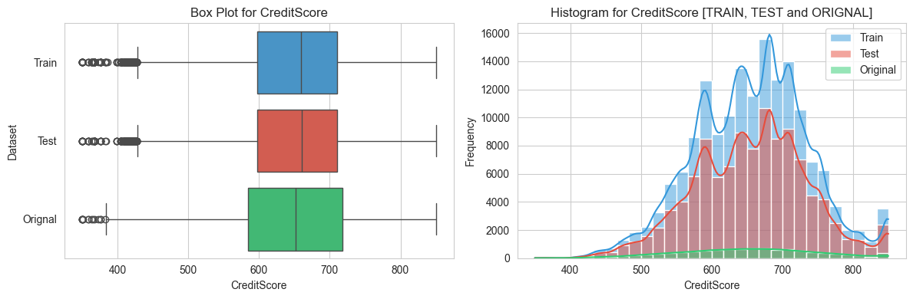
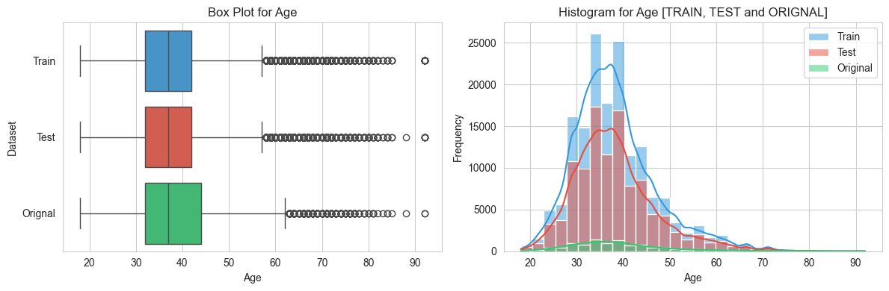
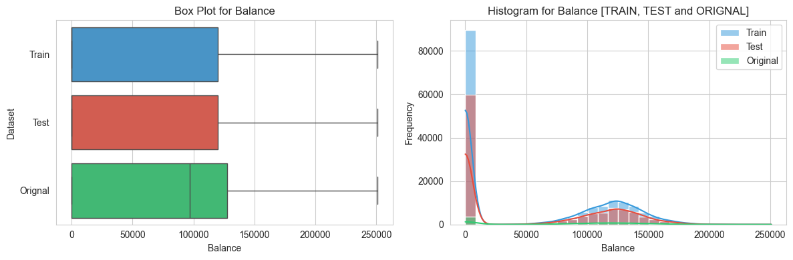
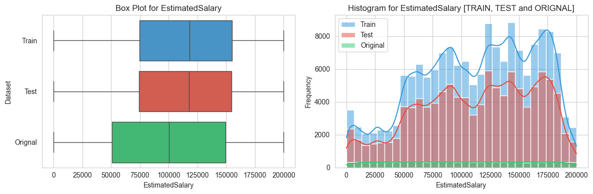
3.2 Categorical features
# Analysis of all CATEGORICAL features
# Define a custom color palette for categorical features
categorical_palette = ['#3498db', '#e74c3c', '#2ecc71', '#f39c12', '#9b59b6', '#bdc3c7', '#1abc9c', '#f1c40f', '#95a5a6', '#d35400']
# List of categorical variables
categorical_variables = [col for col in categorical_variables]
# Function to create and display a row of plots for a single categorical variable
def create_categorical_plots(variable):
sns.set_style('whitegrid')
fig, axes = plt.subplots(1, 2, figsize=(12, 4))
# Pie Chart
plt.subplot(1, 2, 1)
train_data[variable].value_counts().plot.pie(autopct='%1.1f%%',
colors=categorical_palette,
wedgeprops=dict(width=0.3),
startangle=140)
plt.title(f"Pie Chart for {variable}")
# Bar Graph
plt.subplot(1, 2, 2)
sns.countplot(data=pd.concat([
train_data, test_data, orignal_data.dropna()
]), x=variable, palette=categorical_palette)
plt.xlabel(variable)
plt.ylabel("Count")
plt.title(f"Bar Graph for {variable} [TRAIN, TEST & ORIGINAL]")
# Adjust spacing between subplots
plt.tight_layout()
# Show the plots
plt.show()
# Perform univariate analysis for each categorical variable
for variable in categorical_variables:
create_categorical_plots(variable)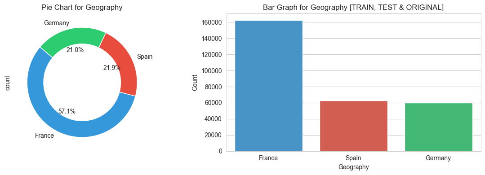
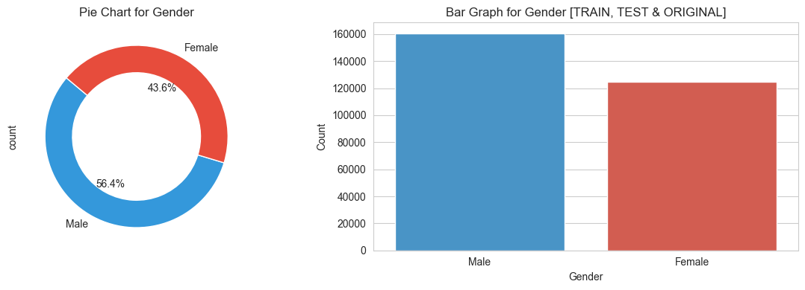
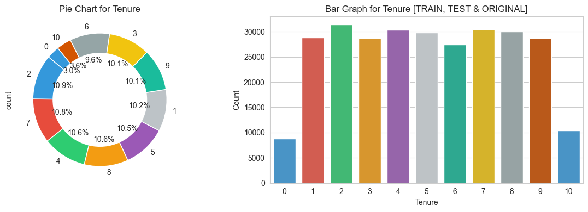
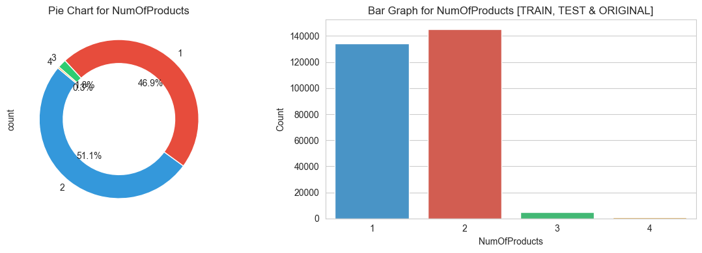
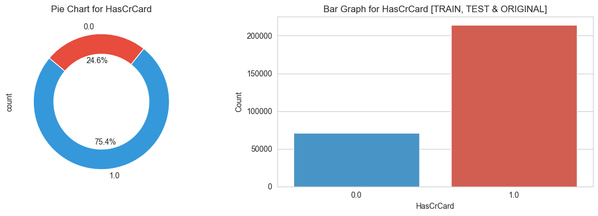
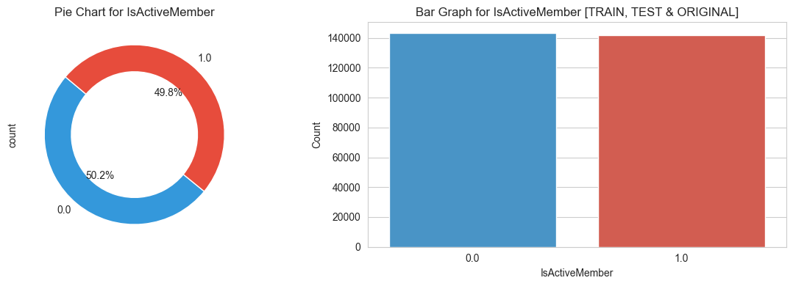
3.3 Target features
# Analysis of TARGET feature
# Define a custom color palette for categorical features
target_palette = ['#3498db', '#e74c3c']
fig, axes = plt.subplots(1, 2, figsize = (12, 4))
# Pie Chart
plt.subplot(1,2,1)
train_data[target_variable].value_counts().plot.pie(
autopct='%1.1f%%', colors= target_palette,
wedgeprops=dict(width=0.3), startangle=140
)
plt.title(f"Pie Chart for Target Feature 'Exited'")
# Bar Graph
plt.subplot(1,2,2)
sns.countplot(data=pd.concat([
train_data, orignal_data.dropna()
]),
x=target_variable, palette=target_palette)
plt.xlabel(variable)
plt.ylabel('Count')
plt.title(f"Bar Graph for Target Feature 'Exited'")
# adjust spacing
plt.tight_layout()
# show
plt.show()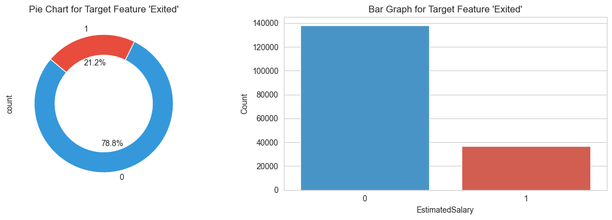
3.4 Bivariate Analysis
variables = [col for col in train_data.columns if col in numerical_variables]
cat_variables_train = ['NumOfProducts', 'HasCrCard', 'IsActiveMember', 'Tenure', 'Exited']
cat_variables_test = ['NumOfProducts', 'HasCrCard', 'IsActiveMember', 'Tenure']
# Adding variables to the existing list
train_variables = variables + cat_variables_train
test_variables = variables + cat_variables_test
# Calculate correlation matrices for train_data and test_data
corr_train = train_data[train_variables].corr()
corr_test = test_data[test_variables].corr()
# Create masks for the upper triangle
mask_train = np.triu(np.ones_like(corr_train, dtype=bool))
mask_test = np.triu(np.ones_like(corr_test, dtype=bool))
# Set the text size and rotation
annot_kws = {"size": 8, "rotation": 45}
# Generate heatmaps for train_data
plt.figure(figsize=(15, 5))
plt.subplot(1, 2, 1)
ax_train = sns.heatmap(corr_train, mask=mask_train, cmap='viridis', annot=True,
square=True, linewidths=.5, xticklabels=1, yticklabels=1, annot_kws=annot_kws)
plt.title('Correlation Heatmap - Train Data')
# Generate heatmaps for test_data
plt.subplot(1, 2, 2)
ax_test = sns.heatmap(corr_test, mask=mask_test, cmap='viridis', annot=True,
square=True, linewidths=.5, xticklabels=1, yticklabels=1, annot_kws=annot_kws)
plt.title('Correlation Heatmap - Test Data')
# Adjust layout
plt.tight_layout()
# Show the plots
plt.show()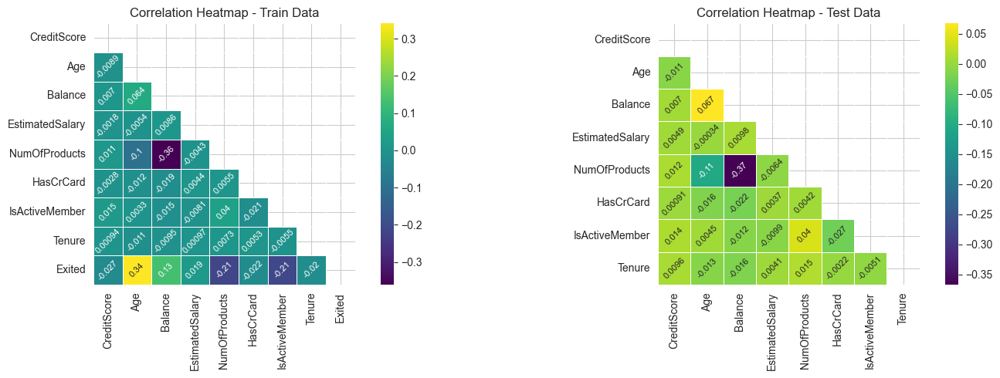